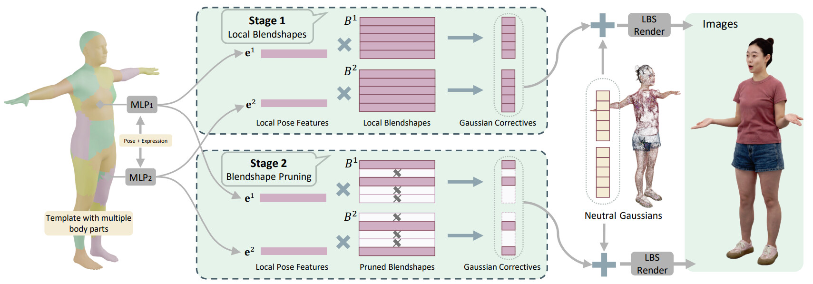
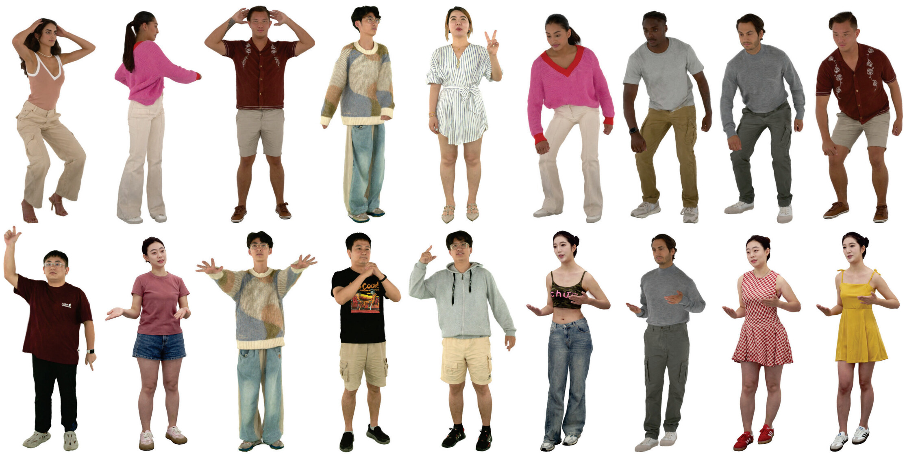

We propose a method to reconstruct high-fidelity human avatars from multi-view video that can run on mobile devices. Many works can model high-quality Gaussian-based full-body avatars from multi-view video. However, these methods require heavy computation to obtain pose-dependent appearance, making deployment on mobile devices very difficult. Recent methods distill from pretrained models and model pose-dependent nonlinear Gaussian attributes by linearly combining global pose features with blendshapes. Although they can run on mobile devices, they suffer some loss of detail. We observe that nearby Gaussians are often highly correlated within a local region of the body, and can be linearly modeled with less error. Therefore, we use local linear blendshapes in small body parts to capture global nonlinear changes of Gaussian attributes. To further reduce computation and model size, we propose to remove blendshapes for Gaussians whose attributes change little, yielding a minimal blendshape representation. Our method is an end-to-end training method without a pretrained model. To make it run on multiple devices, we implement our method using WebGPU. Experiments show that our method can render high-quality human avatars with better details, and can reach 120 FPS at 2K resolution on mobile devices.

Our pipeline partitions the body into local regions, predicts local pose features, applies compact local blendshapes to Gaussian attributes, and prunes low-variation blendshapes for efficient WebGPU deployment.

@article{zhan2026high,
title={High-Fidelity Mobile Avatars with Pruned Local Blendshapes},
author={Zhan, Youyi and Wang, He and Shao, Tianjia and Zhou, Kun},
journal={arXiv preprint arXiv:2605.01854},
year={2026}
}